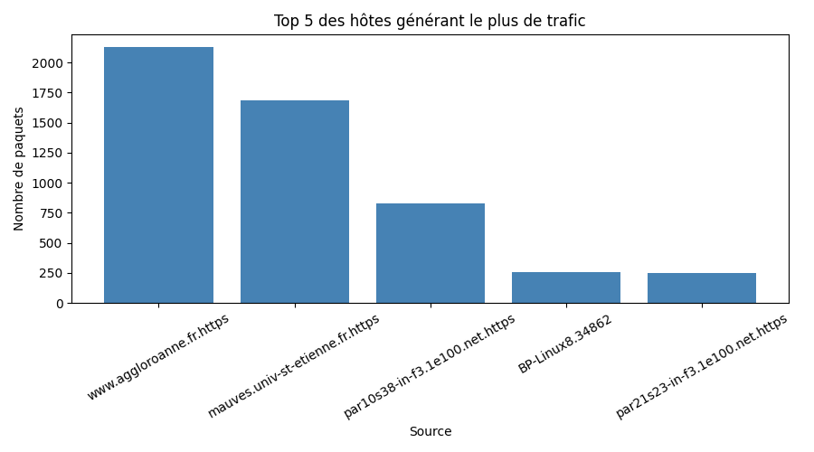

L’analyse porte sur un fichier de capture réseau converti en CSV à partir d’un fichier texte.
Les données ont été traitées afin d’identifier les hôtes générant un trafic anormal ainsi que les services les plus utilisés.
Le diagramme suivant montre les hôtes générant le plus de paquets réseau.

On observe qu’un hôte génère un volume de trafic largement supérieur aux autres, ce qui peut indiquer une activité anormale.
Le trafic SSH a été analysé afin d’identifier une éventuelle tentative de force brute.
La prédominance du trafic SSH suggère une activité suspecte nécessitant une investigation plus approfondie.
Les résultats mettent en évidence un trafic anormal compatible avec une tentative d’attaque ou de reconnaissance réseau.